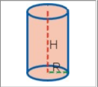
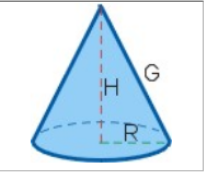
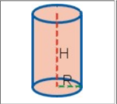
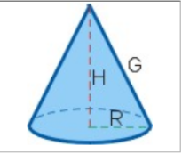

Área y Volumen
Descripción de las fórmulas para calcular área y volumen de figuras geométricas.
Para la sección intermedia conseguir imágenes para cada uno de los cuerpos geométricos.
 
Ecuación cuadrática

Una ecuacion de segundo grado o ecuacion cuadratica de una variable es aquella que tiene la expresion
general:
Ecuacion de segundo grado
Donde x es la variable; meintars que a, b y c son valores constantes y corresponde con los coeficientes:
Para una ecuacion cuadratica con coeficientes reales o complejos existen siempre dos soluciones
x1 y x2
Descripción de las fórmulas para calcular área y volumen de figuras geométricas.
Para la sección intermedia conseguir imágenes para cada uno de los cuerpos geométricos.
 
La última sección se utilizará un programa fuente “hola_mundo.cpp”:
#include <iostream>
using namespace std;
int main() {
cout << "Hola, Mundo!" << endl;
return 0;
}